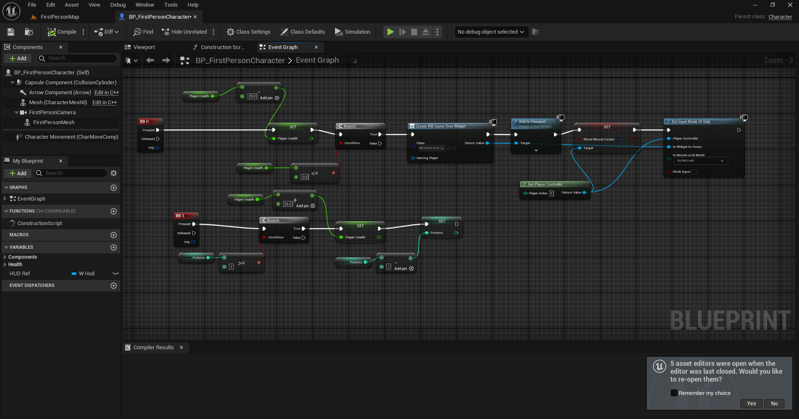
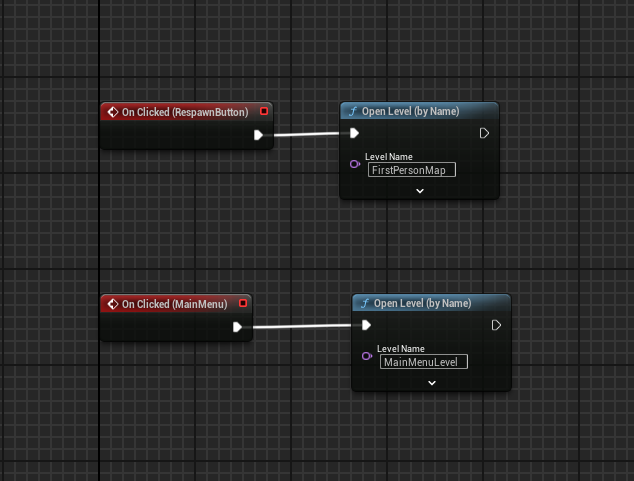
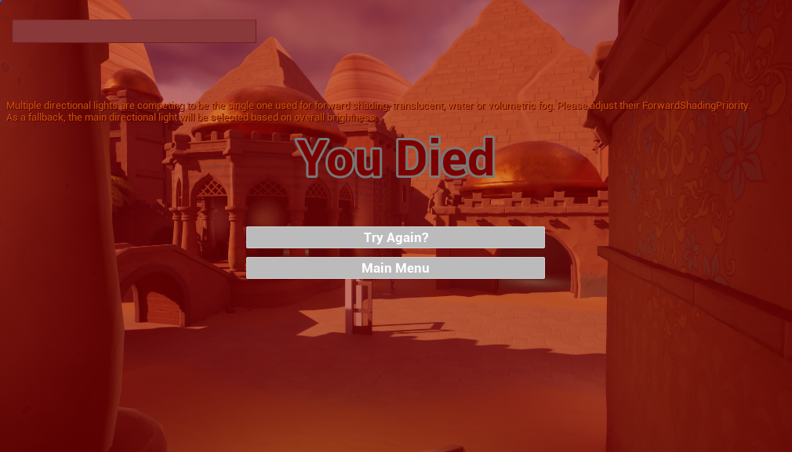
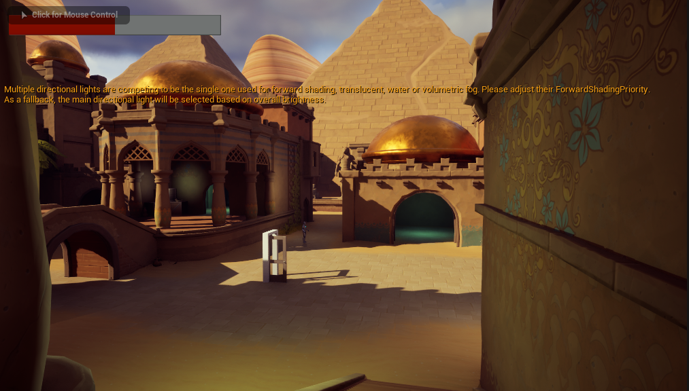
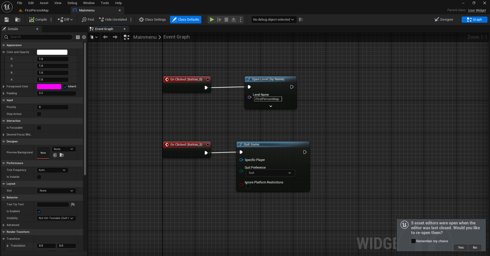
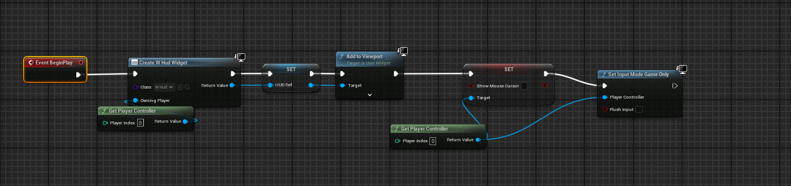

We have created a health system with a bar, damage healing, and a death screen with an option to try again. We also developed a main menu with a start and quit button. Next week, we will work to finish all of the essential parts to our MVP, which are enemies to fight against, and an arena to fight in.
UPDATE: After reaching some technical difficulties, we have ultimately made the decision to change the game from directly fighting in combat to making the game more educational. We still want the game to have some sort of combat, but the attacks will happen by answering questions relating to the respective time period.
Code for potions that heal when damage is taken.
 Game Over screen + its code
Health bar

Home screen + its code
Code that hides the mouse when game is played
Back to Home Page